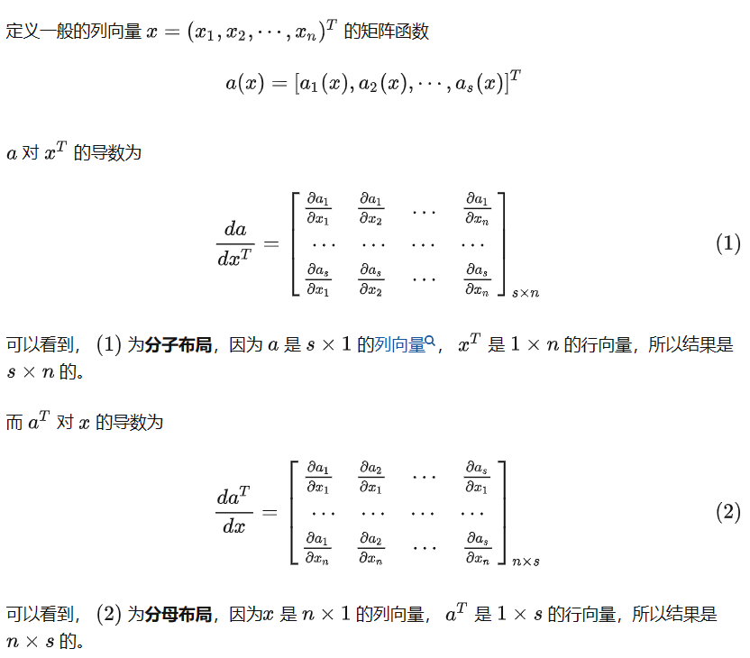

AI学习记录1
part1:数学基础
范数：
向量范数是将向量映射到标量的函数f，以下代码表示一个L2范数1
2u = torch.tensor([3.0, -4.0])
torch.norm(u)
梯度：
一个多元函数对其所有变量的偏导数。一个函数f(x)的输入是n维的向量，输出是一个标量。则函数f(x)相对于x的梯度是一个包含n个偏导数的向量，由于深度学习中，多元函数往往是复合的，所以一般使用链式法则来对复合函数求微分
深度学习框架可以自动计算导数：我们首先将梯度附加到想要对其计算偏导数的变量上，然后记录目标值的计算，执行它的反向传播函数，并访问得到的梯度。以下代码是一个简单的例子1
2
3
4
5
6
7
8
9
10
11
12x = torch.arange(4.0)
#创建梯度，标量函数关于向量x的梯度是向量，且具有相同形状
x.requires_grad_(True) # 等价于x=torch.arange(4.0,requires_grad=True)
y = 2 * torch.dot(x, x) #计算x和x的点积
y.backward()#4x
print(x.grad)
# 在默认情况下，PyTorch会累积梯度，我们需要清除之前的值
x.grad.zero_()
y = x.sum()
y.backward()#1
print(x.grad)
矩阵求导
参考链接-知乎
通过该链接，学习到矩阵求导的基本规则如下图：
梯度下降算法
参考链接-知乎
$x \leftarrow x^2 - \eta\frac{df(x)}{dx}$
梯度作为一个向量，代表一个方向，朝着梯度的反方向变化可以使得函数值变小，$\eta$代表学习率
反向传播算法(Back propagation)
参考链接-知乎
反向传播仅指用于计算梯度的算法
概率
- 联合概率(joint probability): $P(A=a,B=b)$
- 条件概率(conditional probability): $P(A=a|B=b)$
- 贝叶斯定理(multiplication rule): $P(A|B)=\frac{P(B|A)P(A)}{P(B)}$
- 边际化: $P(B) = \sum_{A} P(A,B)$，一般和贝叶斯定理结合使用
- 独立性：$P(A|B)=\frac{P(A,B)}{P(B)}=P(A)$
遗留问题
P43 2.5.2非标量变量的反向传播、2.5.3分离计算
part2:线性神经网络
线性回归与线性模型
线性回归基于几个简单的假设：假设自变量x和因变量y之间的关系是线性的， 即y可以表示为x中元素的加权和，这里通常允许包含观测值的一些噪声； 其次，我们假设任何噪声都比较正常，如噪声遵循正态分布。
数据集称为训练数据集（training data set） 或训练集（training set）。每行数据（比如一次房屋交易相对应的数据）称为样本（sample），也可以称为数据点（data point）或数据样本（data instance）。试图预测的目标（比如预测房屋价格）称为标签（label）或目标（target）。预测所依据的自变量（面积和房龄）称为特征（feature）或协变量（covariate）。
基本的模型如下：
其中b是输入特征的仿射变换，其特点是通过加权和对特征进行线性变换。并通过偏置项进行平移（translation）。
预测模型可用点积表示：
或用矩阵向量积表示：
其中 $\boldsymbol{X}\in{\mathbb{R}^{n*d}}$ 其每一行是一个样本，一共有n个预测结果。该模型的模型参数为$\boldsymbol{w}$和$b$,为找到最佳的参数，还需要两个工具：
- 一种模型质量的度量方式
- 一种能够更新模型以提高模型预测质量的方法
损失函数
使用损失函数量化目标的实际值与预测值之间的差距，通常选择非负数作为损失，数值越小越好，完美预测时损失为0。线性回归往往用平方误差作为损失函数：
为了度量模型在整个数据集上的预测质量，需要计算在训练集n个样本上的损失均值:
训练模型的目的是找到一组参数，这组参数能最小化在所有训练样本上的总损失
解析解
线性回归的解可用一个公式简单的表示，将b合并到w中，最小化$||\boldsymbol{y}-\boldsymbol{X}\boldsymbol{w}||^2$，得到解析解
随机梯度下降
在无法得到解析解的情况下，我们也可以有效地训练模型。梯度下降（gradient descent）的通过不断地在损失函数递减的方向上更新参数来降低误差，但是每次更新参数都必须遍历整个数据集，为提高速度，通常在每次需要计算更新的时候随机抽取一小批样本。这种方法称为小批量随机梯度下降（minibatch stochastic gradient descent）。